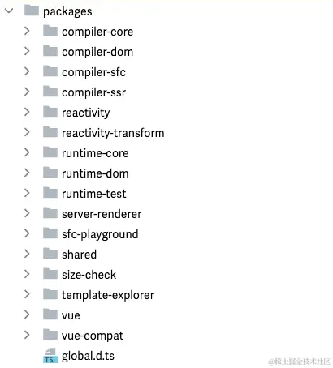
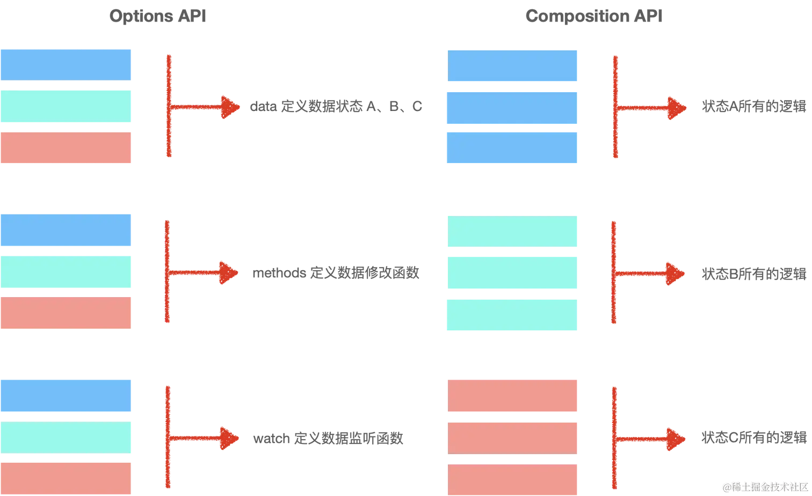
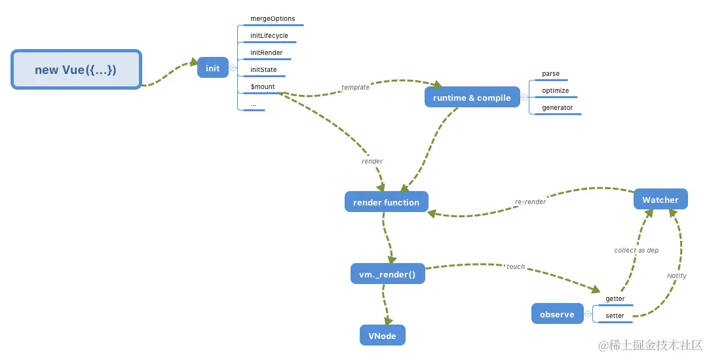

Vue 2 即将成为过去
自从 2020 年 9 月 18 日 Vue 3 正式发布以来，已经有两年多时间了，终于在 2022 年 2 月 7 日 Vue 作者发布了一则消息：Vue 3 将成为新的默认版本。与此同时，Vue 相关官方周边的核心库 latest 发布标签将指向其 Vue 3 的兼容版本。
另外，随着 Vue 2.7 的发布，Vue 2.7 已经成为 Vue 2.x 的最终次要版本。在这个版本之后，Vue 2 进入了 LTS（长期支持），并且将不再接收新功能。这意味着 Vue 2.x 将在 2023 年底结束其生命周期。
可以预见：在不久的将来，Vue 2.x 将会逐步淡出江湖，Vue 3 将会成为代替 Vue 2 的主流框架。
Vue 3 作为一个全球最顶尖的前端框架之一，整体的思想理念、程序设计、细节的取舍、API 设计、项目的工程考量都是非常优秀的！通过对源码的阅读，不仅仅可以让我们快速建立起对 Vue 3 运行机制的深入了解，还可以从中学习到很多程序设计的宝贵经验和架构思想！
所以，让我们快人一步，现在就开始对 Vue 3 的深耕，去学习一下 Vue 3 的核心技术实现原理，以及一些相对于 Vue 2 的改变之处。
全面拥抱 Vue 3
Vue 3 整体的设计相对于 Vue 2.x 有着不小的变化，在开启 Vue 3 技术揭秘的旅途之前，我们先着重介绍几个相对于 Vue 2.x 而言较大的几个变化，这里的介绍不会深入到源码的细节，旨在帮助小伙伴们快速建立起对 Vue 3 的一些前置认知，更多的细节变化和设计原理我们将在接下来的课程中为大家渐进式地揭开面纱！
1. 源码组织上的变化
在 Vue 2 中，所有的源码都存在在 src 目录下：
Vue 3 相对于 Vue 2 使用 monorepo 的方式进行包管理，使用 monorepo 的管理方式，使得 Vue 3 源码模块职责显得特别地清晰明了，每个包独立负责一块核心功能的实现，方便开发和测试。如下图：

比如，compiler-core 专职负责与平台无关层的渲染器底层，对外提供统一调用函数，内部通过完整的测试用例保障功能的稳定性。而 compiler-dom 和 compiler-ssr 则依托于 compiler-core 分别实现浏览器和服务端侧的渲染器上层逻辑，模块核心职责清晰明了，提高了整体程序运行的健壮性！
2. 引入 Composition API
在 Vue 2.7 之前，我们去开发 Vue 应用，都是通过 data、computed、methods……这样的选项分类的方式来实现一个组件的开发。其实这样对于没有大量状态逻辑维护、复用的组件来说，是比较直观的组织方式，但是一旦遇到需要大量维护、复用状态的组件来说，这无疑增加了维护的成本和风险。
组合式 API (Composition API) 是一系列 API 的集合，使我们可以使用函数而不是声明选项的方式书写 Vue 组件。通过下图我们可以清晰地看出来二者的区别：

但 Composition API 也并不是“银弹”，它也有自己适合的场景，所以 Vue 3 也是在实现层面做到了兼容 Options API 的写法。相对而言，Composition API 更适用于大型的项目，因为大型项目可能会产生大量状态逻辑的维护，甚至跨组件的逻辑复用；而对于中小型项目来说，Options API 可以在你写代码时减少思考组织状态逻辑的方式，也是一种不错的选择。
3. 运作机制的变化
熟悉 Vue 2 源码的同学大致清楚 Vue 2的核心运作机制可以抽象为下图所示的样子：

Vue 3 则在底层实现中，摒弃了 Vue 2 的部分实现，采用全新的响应式模型进行重写。这里我根据 Vue 3 的运行机制，也简单画了一张 Vue 3 的宏观草图，如下所示：
可以粗略地看到：
- 首先，之前通过
new Vue()来创建 Vue 对象的方式已经变成了createApp； - 其次，在响应式部分也由原来的
Object.defineProperty改成了现在的Proxy API实现； - 另外，针对响应式依赖收集的内容，在 Vue 2.x 版本中是收集了
Watcher，而到了 Vue 3 中则成了effect。
除了上面所说的这些变化外，Vue 3 不管是在编译时、还是在运行时都做了大量的性能优化。例如，在编译时，Vue 3 通过标记 /*#__PURE__*/ 来为打包工具提供良好的 Tree-Shaking 机制，通过 静态提升 机制，避免了大量静态节点的重复渲染执行；在运行时，又通过批量队列更新机制优化了更新性能，通过 PatchFlags 和 dynamicChildren 进行了 diff 的靶向更新……
上面的内容有些不理解了？没关系，等等，这里先卖个关子。相信你一定可以在学习本小册的过程中，得到你的答案！
开启小册的前置准备
如果你已经迫不及待地想赶紧开始学习 Vue 3 的设计核心，请稍安勿躁，我们还需要做一些准备工作，以方便你在后续的学习中更容易理解文中的内容。
首先，本小册中所有关于 Vue 的源码所依托的版本是 3.2.47。然后你也可以去 GitHub 上 clone 下来 Vue 3 源码。
clone 下来后，我们可以简单看一下项目的目录结构：
bash复制代码├── packages
│ ├── compiler-core # 与平台无关的编译器实现的核心函数包
│ ├── compiler-dom # 浏览器相关的编译器上层内容
│ ├── compiler-sfc # 单文件组件的编译器
│ ├── compiler-ssr # 服务端渲染相关的编译器实现
│ ├── global.d.ts # ts 相关一些声明文件
│ ├── reactivity # 响应式核心包
│ ├── runtime-core # 与平台无关的渲染器相关的核心包
│ ├── runtime-dom # 浏览器相关的渲染器部分
│ ├── runtime-test # 渲染器测试相关代码
│ ├── server-renderer # 服务端渲染相关的包
│ ├── sfc-playground # 单文件组件演练场
│ ├── shared # 工具库相关
│ ├── size-check # 检测代码体积相关
│ ├── template-explorer # 演示模板编译成渲染函数相关的包
│ └── vue # 包含编译时和运行时的发布包
本小册介绍的核心内容主要分布在 compiler-core、compiler-dom、reactivity、 runtime-core、runtime-dom 这几个包中，这些也是 Vue 的核心。
另外，在阅读过程中，你也可以一边看、一边自己调试，Vue 为我们提供了很多开发使用的示例，我们可以通过下面的命令来运行它：
shell复制代码$ npm run dev # 开启 vue dev 环境 watch
$ npm run serve # 启动 example 示例的服务器
接着，我们只需要访问 packages/vue/examples/** 中的示例就可以在线调试 Vue 代码了。
最后，让我们一起进入 Vue 3 的世界，探索其中的奥秘吧！